BAB I: Gambaran Umum & Cara Akses di Kantor
Aplikasi Sistem Informasi Manajemen Inventaris & Ruangan Kantor merupakan sistem terpusat berbasis web yang di-hosting langsung pada server lokal di dalam lingkungan kantor (On-Premise LAN). Seluruh staf dapat mengakses aplikasi ini menggunakan web browser standar (Google Chrome, Microsoft Edge, Mozilla Firefox) tanpa perlu menginstal aplikasi tambahan di setiap komputer klien.
👉
http://192.168.1.15:3000 atau http://localhost:3000 (pada komputer server).
Fitur-Fitur Kunci Sistem
| Kategori Modul | Fungsi Utama | Pengguna Utama |
|---|---|---|
| Hak Akses Grup | Pemberian hak akses per divisi & level jabatan terpusat | Administrator IT |
| Master Data Aset | Katalog inventaris dengan barcode, spesifikasi, dan lokasi fisik | Staff GA & Gudang |
| Sirkulasi Barang | Pencatatan peminjaman, pengembalian, dan barang keluar habis pakai | Seluruh Karyawan / GA |
| Booking Ruangan | Reservasi ruang meeting kantor dengan pencegahan tabrakan jam | Seluruh Divisi |
| Stock Opname | Rekonsiliasi berkala stok fisik riil dengan catatan sistem | Petugas Audit / GA |
| Pelaporan & Cetak | Ekspor Microsoft Excel dan pratinjau cetak ber-kop surat resmi | Pimpinan & GA |
BAB II: Hak Akses Berbasis Grup Divisi (Group RBAC)
Sistem menerapkan konsep Group Permission pada level divisi kerja. Anda tidak perlu menyetel izin menu satu per satu untuk setiap pegawai. Pengaturan dilakukan sekali saja pada grup Divisi, lalu setiap pengguna yang dibuat otomatis mewarisi seluruh hak akses divisinya.
2.1 Melihat & Mengelola List Akses Divisi
Navigasikan ke menu sidebar Akses & Pengguna → List Akses (Divisi). Halaman ini menyajikan tabel seluruh divisi kantor beserta level jabatannya.
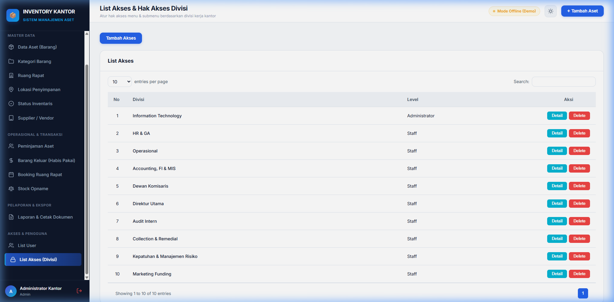
- Pencarian Cepat: Masukkan kata kunci pada kotak
Searchdi sudut kanan atas untuk mencari divisi tertentu (contoh: Operasional atau IT). - Mengatur Jumlah Baris: Gunakan dropdown
entries per pageuntuk menampilkan 10, 25, atau 50 divisi per halaman. - Membuka Pengaturan Hak Akses: Klik tombol Detail berwarna teal pada baris divisi yang ingin Anda konfigurasi hak aksesnya.
- Menambah Grup Baru: Klik tombol + Tambah Akses di atas tabel untuk mendefinisikan divisi kerja baru.
2.2 Mengatur Form Matrix Hak Akses (2 Kolom Menu & Submenu)
Ketika tombol Detail diklik, sistem berpindah ke layar pengaturan matriks perizinan dua kolom.
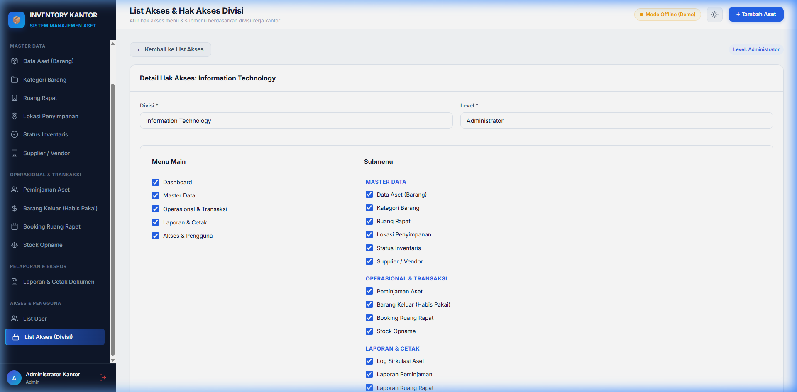
- Kolom Kiri (Menu Main): Centang modul utama yang boleh dilihat oleh divisi tersebut (Dashboard, Master Data, Operasional, Laporan, Akses).
- Kolom Kanan (Submenu): Centang fitur-fitur spesifik per kelompok kategori (Data Aset, Ruang Rapat, Peminjaman, Booking, List User, dll.).
- Tombol Bantuan: Klik
Pilih Semuauntuk mencentang seluruh perizinan sekaligus (mode Administrator), atauBatal Semuauntuk mengosongkan centang. - Menyimpan Pengaturan: Klik tombol 💾 Simpan Pengaturan Akses. Seluruh user yang berada di divisi tersebut akan langsung terupdate hak aksesnya secara real-time.
BAB III: Manajemen Pengguna & Penugasan Divisi
Modul ini digunakan oleh Administrator untuk mengelola akun pegawai kantor yang berhak login ke dalam sistem aplikasi.
3.1 Daftar Pengguna Terdaftar (List User)
Buka menu sidebar Akses & Pengguna → List User. Sistem menampilkan daftar nama pegawai, username, divisi yang ditugaskan, level, dan status akun aktif.
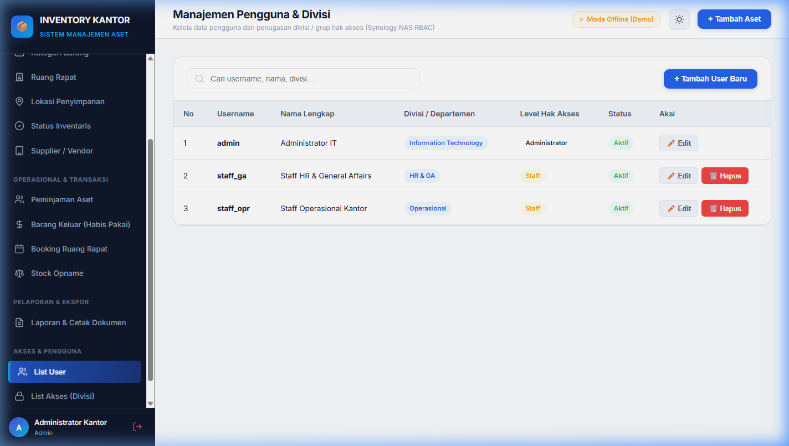
3.2 Menambah User Baru (Pewarisan Grup Divisi Otomatis)
Klik tombol + Tambah User Baru di pojok kanan atas tabel user untuk memunculkan formulir registrasi.
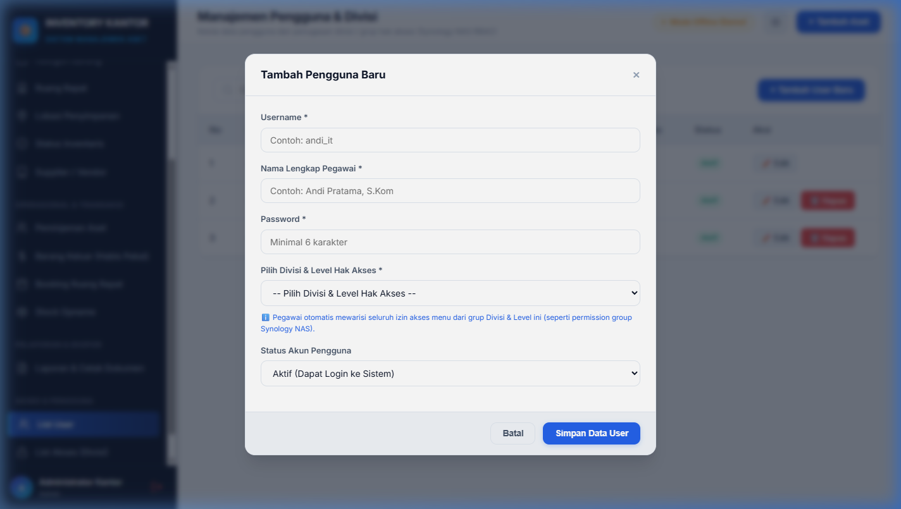
- Username: Masukkan ID login pengguna tanpa spasi (contoh:
andi_itataustaff_ga). - Nama Lengkap Pegawai: Masukkan nama lengkap pegawai beserta gelar (contoh:
Andi Pratama, S.Kom). - Password: Masukkan kata sandi awal (minimal 6 karakter).
- Pilih Divisi & Level Hak Akses: Pilih grup kerja dari dropdown. Pegawai akan langsung mewarisi seluruh izin akses menu dari grup ini.
- Status Akun: Pastikan memilih
Aktifagar pengguna dapat langsung login. - Klik Simpan Data User.
BAB IV: Dashboard Utama & Monitoring Real-Time
Dashboard merupakan halaman beranda yang menyajikan ringkasan visual status operasional inventaris dan agenda rapat secara real-time.
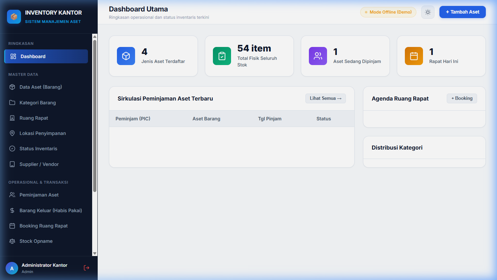
Komponen Penting Dashboard
- Kartu KPI Atas:
• Jenis Aset Terdaftar: Jumlah ragam barang yang tercatat di inventaris.
• Total Fisik Seluruh Stok: Akumulasi seluruh unit fisik barang di gudang/kantor.
• Aset Sedang Dipinjam: Jumlah unit barang yang saat ini berada di luar gudang.
• Rapat Hari Ini: Jumlah reservasi ruang rapat yang diagendakan pada hari ini. - Tabel Sirkulasi Peminjaman Terbaru: Menampilkan 5 transaksi peminjaman aset terakhir untuk pemantauan cepat oleh petugas GA.
- Widget Agenda Ruang Rapat: Memberikan informasi ruang rapat apa yang sedang dipakai, jam pelaksanaan, dan siapa PIC yang bertanggung jawab.
BAB V: Pengelolaan Master Data Inventaris
Master data merupakan fondasi seluruh data inventaris kantor. Modul ini mencakup data barang, klasifikasi kategori, ruangan pertemuan, gudang penyimpanan, status barang, dan rekanan supplier.
5.1 Data Aset (Barang) & Kode Barcode
Buka menu Master Data → Data Aset (Barang) untuk melihat seluruh katalog inventaris kantor.
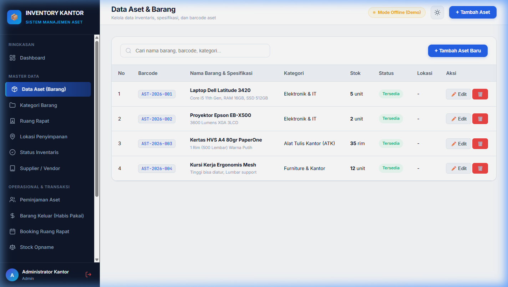
Untuk mendaftarkan aset baru, klik tombol + Tambah Aset pada sudut kanan atas:
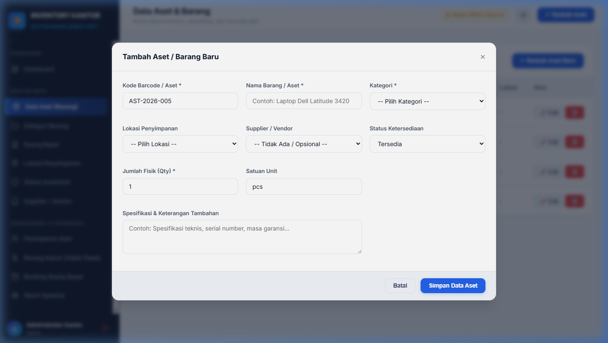
5.2 Kategori Barang (Aset Tetap vs Habis Pakai)
Menu ini memisahkan inventaris kantor menjadi dua klasifikasi penting: ASET TETAP (peralatan kerja yang tidak habis dipakai seperti laptop, proyektor, kursi) dan CONSUMABLE (barang habis pakai seperti kertas HVS, pulpen, tinta printer).
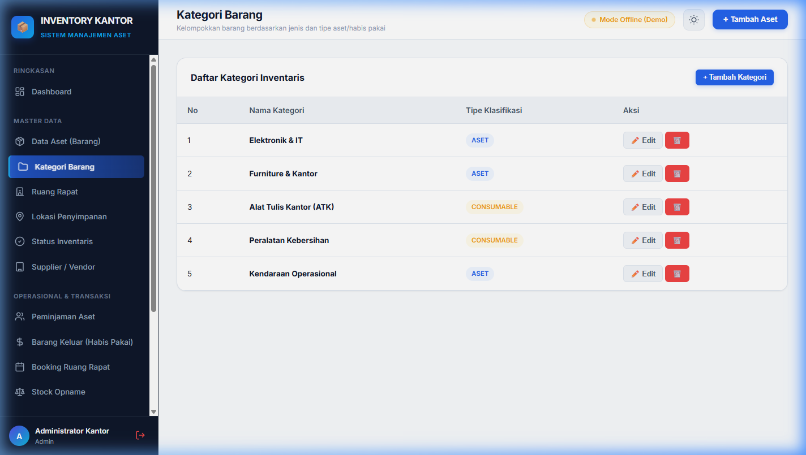
5.3 Ruang Pertemuan / Rapat
Daftar seluruh ruangan meeting kantor yang tersedia untuk dipakai reservasi agenda kerja.
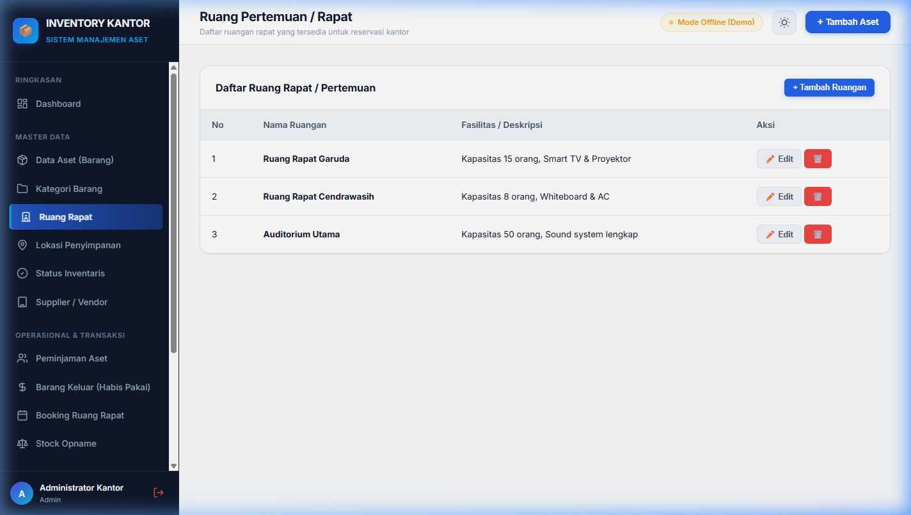
5.4 Lokasi Penyimpanan & Gudang
Mendata letak fisik penyimpanan barang (misal: Lantai 1, Gudang Utama, Ruang Server, Ruang GA).
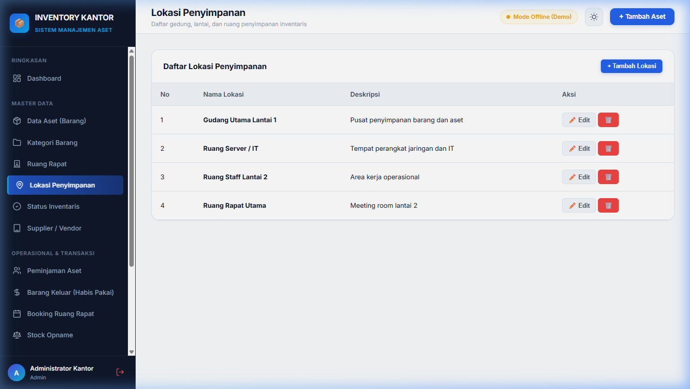
5.5 Status Inventaris Ketersediaan
Label status barang untuk menentukan apakah suatu barang boleh dipinjam atau tidak (contoh: Tersedia, Dipinjam, Dalam Perbaikan, Rusak / Di-Afkir).
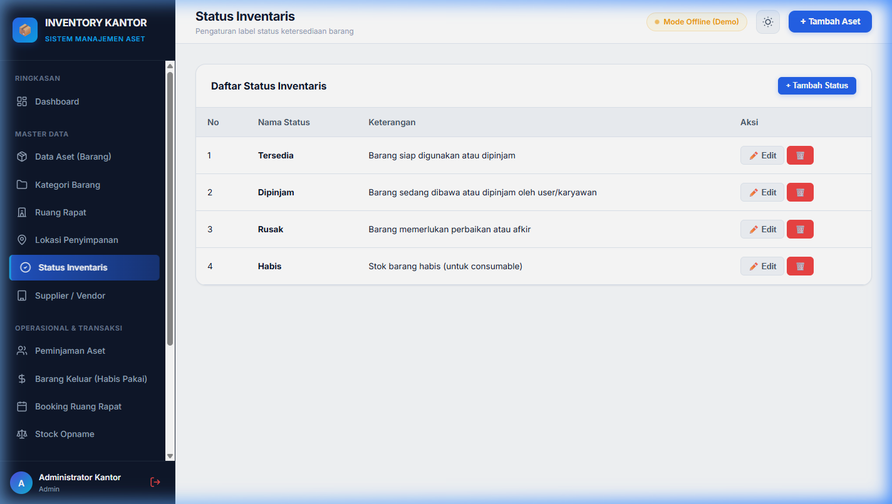
5.6 Supplier / Rekanan Vendor
Mencatat kontak rekanan resmi penyedia pengadaan barang dan layanan perbaikan/garansi aset kantor.
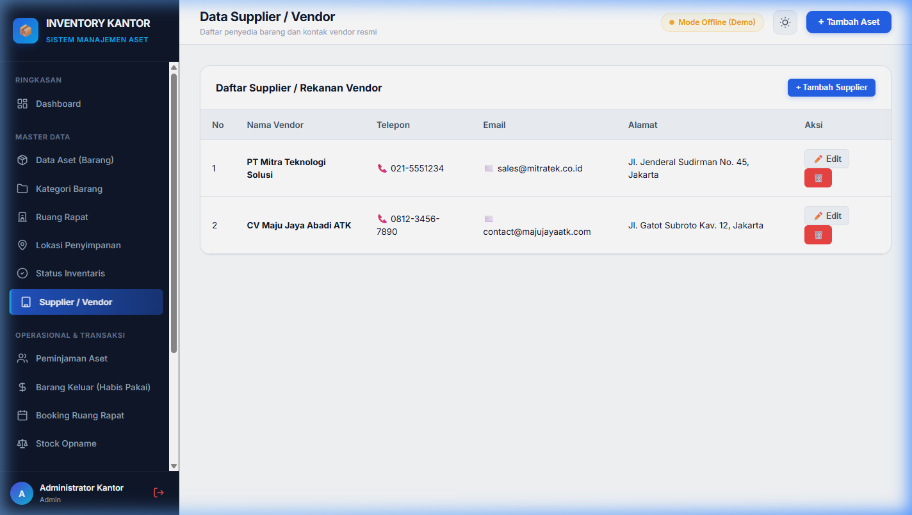
BAB VI: Operasional & Transaksi Sirkulasi
6.1 Peminjaman Aset Kantor & Pengembalian
Menu ini digunakan ketika staf meminjam peralatan kantor (misal: Laptop cadangan, Proyektor, Kamera dokumentasi, Kabel konverter).
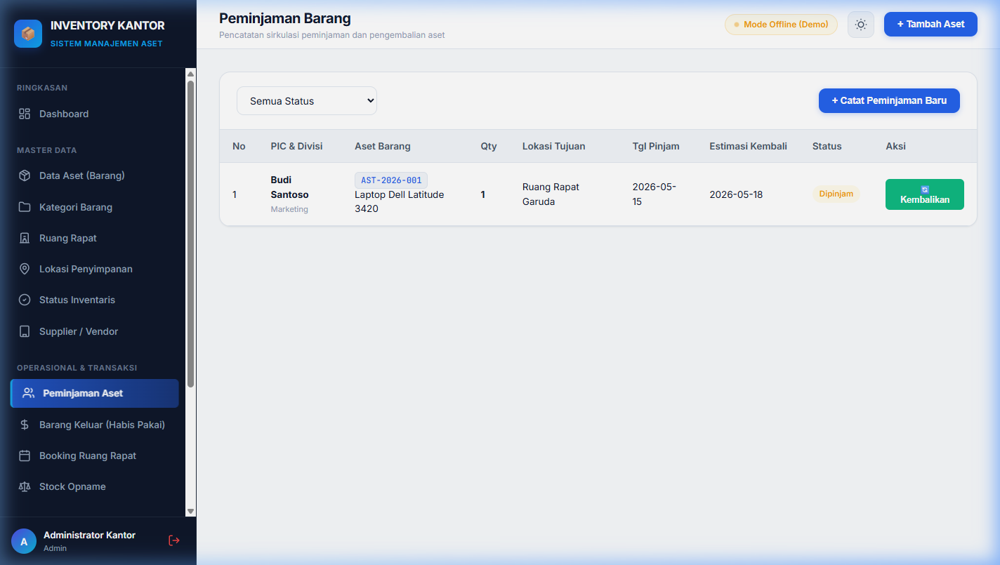
Untuk mencatat peminjaman baru, klik tombol + Pinjam Aset:
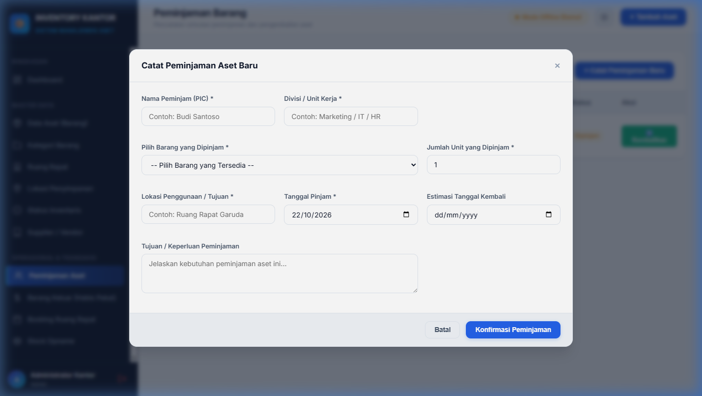
Proses Kembali, stok barang otomatis bertambah kembali.
6.2 Barang Keluar (Habis Pakai / ATK)
Menu ini khusus untuk mendata barang-barang tipe consumable (ATK, spidol, kertas, baterai) yang dikeluarkan dari gudang untuk kebutuhan rutin divisi dan tidak perlu dikembalikan.
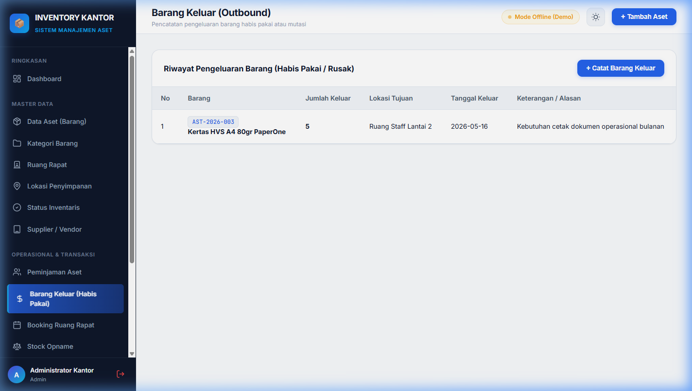
6.3 Booking Ruang Rapat (Anti Bentrok Jadwal)
Fasilitas reservasi ruang rapat untuk seluruh staf kantor dengan teknologi validasi otomatis tabrakan jam pertemuan.
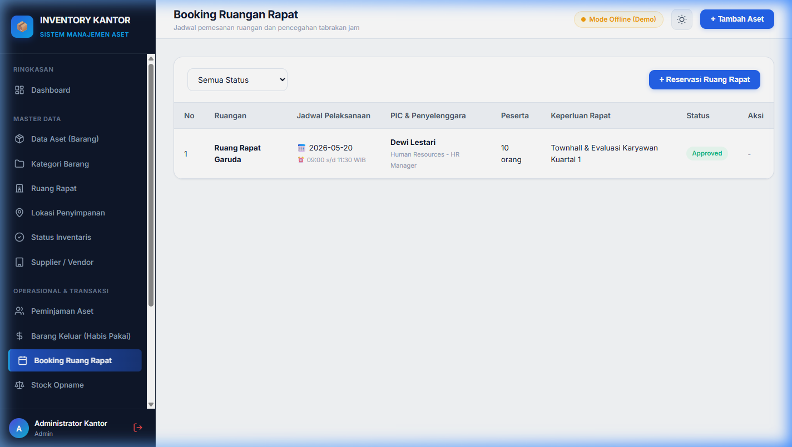
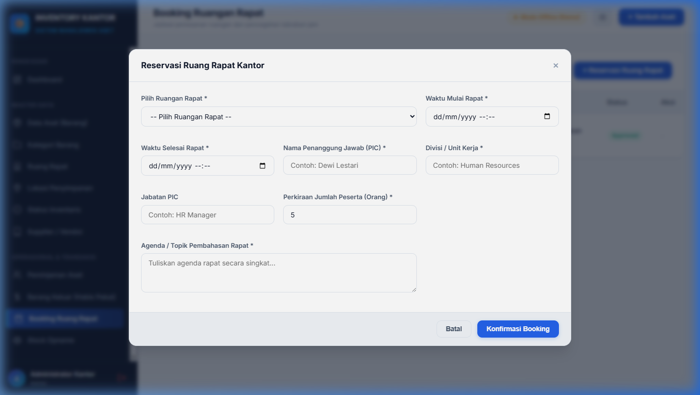
6.4 Stock Opname (Audit Fisik Berkala)
Modul wajib bagi staf General Affairs untuk melakukan audit inventaris fisik di gudang secara berkala (bulanan / semester) guna membandingkan catatan sistem dengan stok fisik nyata.
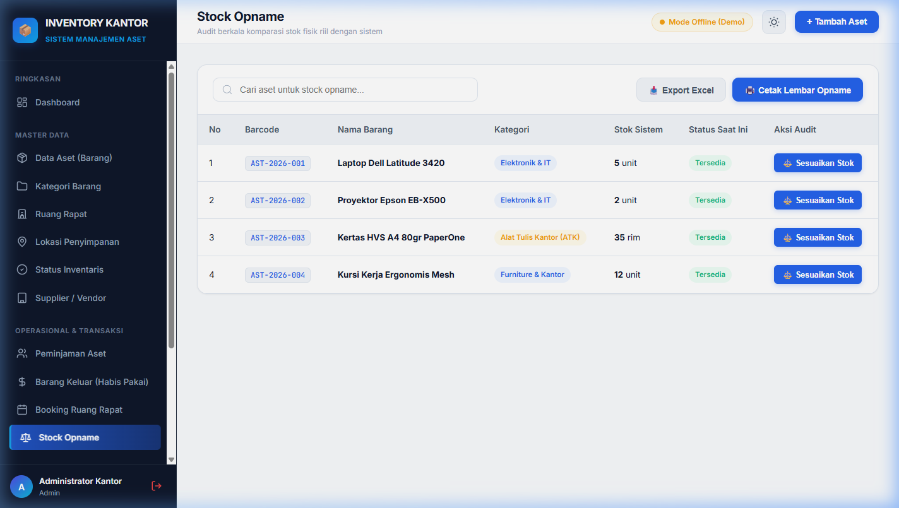
- Klik tombol Audit / Cek Fisik pada barang yang sedang dihitung di gudang.
- Masukkan jumlah fisik nyata hasil audit.
- Jika terdapat selisih, tuliskan alasan penyesuaian (misal: Ditemukan 1 unit di lemari belakang atau 1 unit pecah saat pemindahan).
- Klik Terapkan Penyesuaian Stok. Sistem mencatat log audit lengkap untuk pertanggungjawaban.
BAB VII: Pelaporan, Ekspor Excel & Cetak Dokumen Resmi
Modul Pelaporan & Cetak Dokumen berfungsi menghasilkan rekapitulasi data yang siap diserahkan ke pimpinan instansi atau auditor.
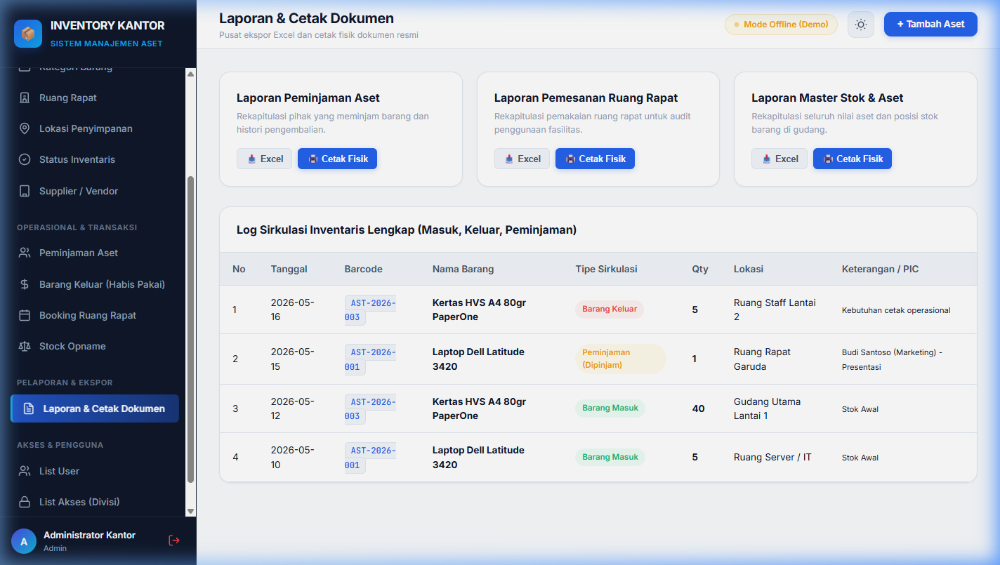
Cetak Dokumen Ber-Kop Surat Dinas Resmi
Klik tombol 🖨️ Cetak Fisik pada kartu laporan yang diinginkan. Sistem akan menampilkan pratinjau surat dinas lengkap dengan kop surat kantor, data tabel terstruktur, dan kolom tanda tangan pejabat yang berwenang.
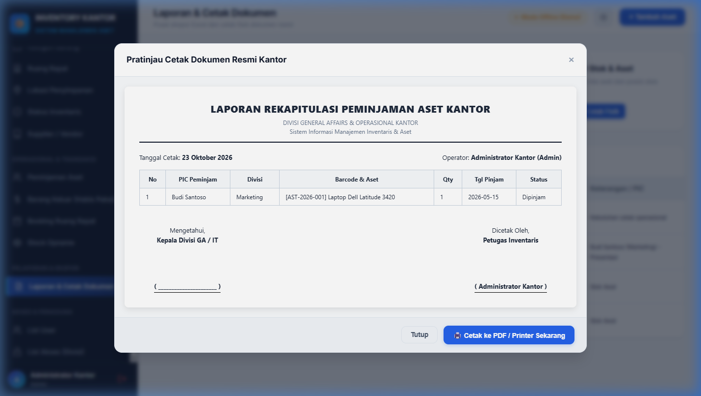
PDF atau langsung mencetak ke mesin printer kantor.
BAB VIII: Pertanyaan Umum (FAQ) & Solusi Kendala
192.168.1.15) tidak berubah dan firewall port 3000 pada komputer server telah diizinkan (Allow Inbound).
.xls akan langsung terunduh secara otomatis.